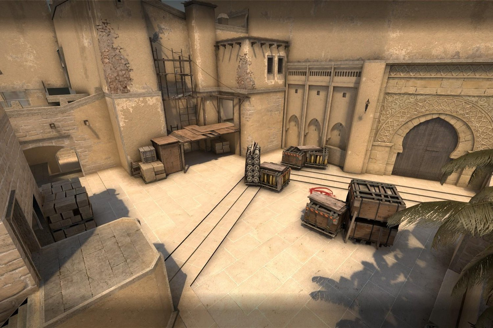
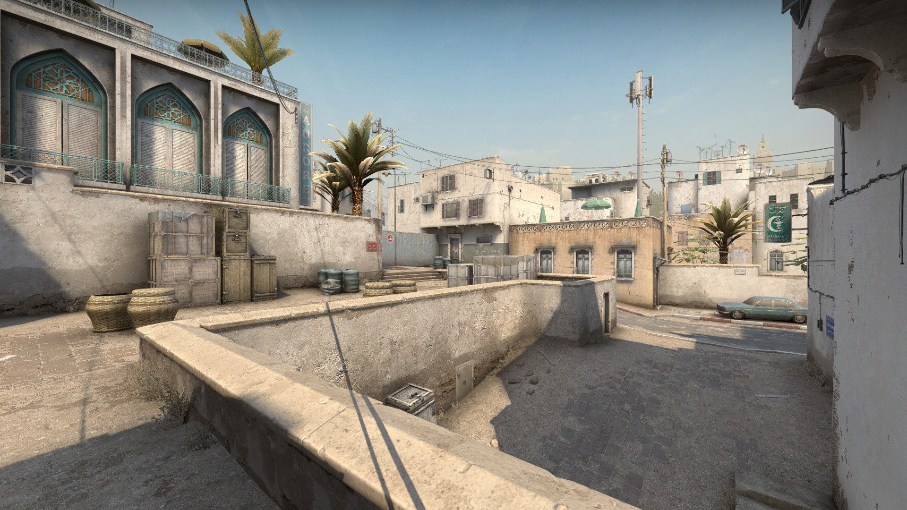
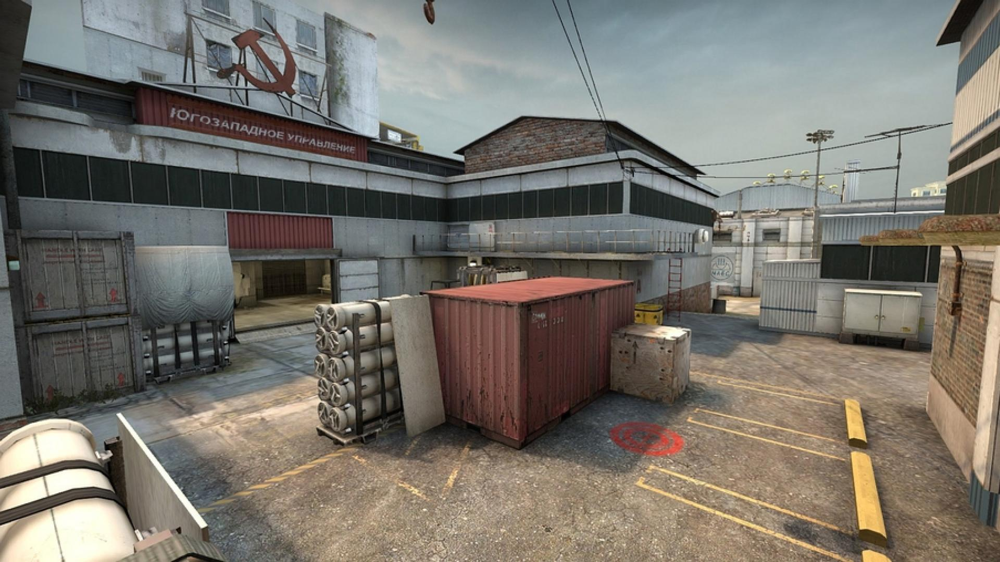

Les maps sur CS:GO
Les maps sont différentes et ont toutes deux sites pour poser les bombes. Toutes les maps ont des univers différents. Les maps les plus jouées sont souvent les maps les plus stratégiques et avec beaucoup de positions et d'angles pour tirer. Toutes les positions ont un nom.
Les maps les plus jouées sont;
Mirage.
Dust 2.
Cache
Train

Overpass

Inferno